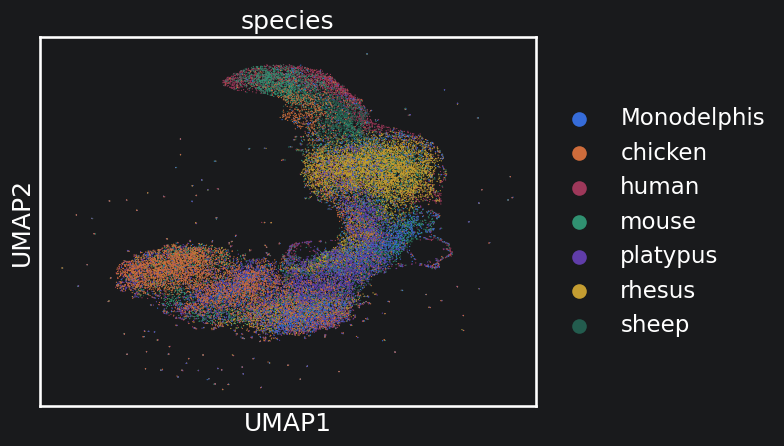
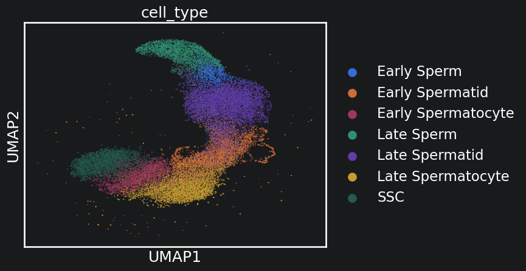
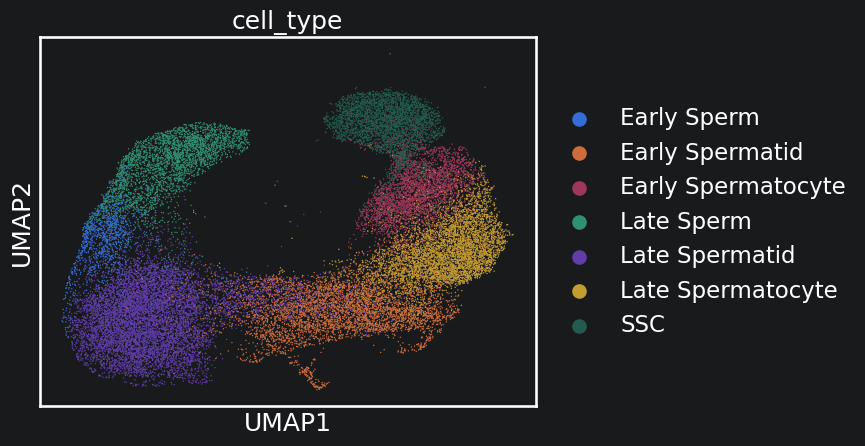

CSHint Integration Tutorial
Before you get started
You need the following data:
1) Reference proteomes for each species
This model works right out of the box with refseq and ensemble proteome header formats from the following sources: https://www.ncbi.nlm.nih.gov/datasets/ http://ftp.ensembl.org/pub/
if you are using data from one of these sources, download both the .faa and .gtf files. If not, the protomes input into the tool must be in the following format, with gene names that directly match those in the scRNA-seq matrices:
>gene_name_1 Sequence >gene_name_2 Sequence
2) Cleaned scRNA-seq matrices
Counts should be stored within anndata objects compressed in the h5ad format. Raw counts should be stored in the adata.X slot. Each species should be stored in its own h5ad file. These datasets should be filtered for high quality genes/cells beforehand.
3) Putative cell type annotations CSHint requires that each species have at least 3 cell types in common with the reference species. Cell type annotations do not need to be complete or highly granular. General groupings like “epithelial”, “endothelial”, “stromal”, and “immune” will suffice. Cell type names need to be standardised across species. They should be stored in a single column in the adata.obs slot in the h5ads for each species.
Preprocessing module
The preprocessing module is an optional module that automates some of the necessary preprocessing for CSHint. Note that these cleaning steps must be done manually if you choose note to use this module, or if your data does not follow standard formats.
Step 1: clean the proteomes:
In the below step, we are cleaning the proteome headers so that they only contain gene names that match the scRNA-seq matrices. In this case, we are using proteome from both refseq and ensembl, to match the original assemblies used by the authors. The preprocess module can automatically detect these file headers, and parse them accordingly. It will write the cleaned fastas into a new directory
[1]:
import warnings
from CSHint.utils.CSHint_preprocess import CSHint_preprocess
warnings.filterwarnings("ignore")
pre = CSHint_preprocess()
datapath = "../../PaperScripts/Spermatogenesis/Data/"
path_dict = {
"chicken" : {"gtf" : datapath + "gtfs/chicken.gtf",
"fasta": datapath + "raw_proteomes/chicken.faa"},
"human" : {"gtf" : datapath + "gtfs/human.gtf",
"fasta": datapath + "raw_proteomes/human.faa"},
"mouse" : {"gtf" : datapath + "gtfs/mouse.gtf",
"fasta": datapath + "raw_proteomes/mouse.faa"},
"Monodelphis" : {"gtf" : datapath + "gtfs/Monodelphis.gtf",
"fasta": datapath + "raw_proteomes/Monodelphis.faa"},
"platypus" : {"gtf" : datapath + "gtfs/platypus.gtf",
"fasta": datapath + "raw_proteomes/platypus.faa"},
"rhesus" : {"gtf" : datapath + "gtfs/rhesus.gff",
"fasta": datapath + "raw_proteomes/rhesus.faa"},
"sheep" : {"gtf" : datapath + "gtfs/sheep.gtf",
"fasta": datapath + "raw_proteomes/sheep.faa"}
}
pre.preprocess_fasta_headers(path_dict, out_dir ="filtered_proteomes")
[chicken] Converting FASTA headers... (detected format: ensembl)
[chicken] GTF index (Ensembl): 93,251 accession entries.
[chicken] Autodetected link field 'ENSGAL' (ENSGAL:200) from 200 headers.
[chicken] 18308 unique symbols written (0 unmatched).
[chicken] → filtered_proteomes/chicken.faa
[chicken] → filtered_proteomes/chicken_id_map.csv
[human] Converting FASTA headers... (detected format: refseq)
[human] GTF index (RefSeq): 212,424 accession entries.
[human] Autodetected link field 'NP' (NP:200) from 200 headers.
[human] 19869 unique symbols written (0 unmatched).
[human] → filtered_proteomes/human.faa
[human] → filtered_proteomes/human_id_map.csv
[mouse] Converting FASTA headers... (detected format: refseq)
[mouse] GTF index (RefSeq): 101,433 accession entries.
[mouse] Autodetected link field 'NP' (NP:200) from 200 headers.
[mouse] 21847 unique symbols written (0 unmatched).
[mouse] → filtered_proteomes/mouse.faa
[mouse] → filtered_proteomes/mouse_id_map.csv
[Monodelphis] Converting FASTA headers... (detected format: ensembl)
[Monodelphis] GTF index (Ensembl): 85,037 accession entries.
[Monodelphis] Autodetected link field 'ENSMOD' (ENSMOD:200) from 200 headers.
[Monodelphis] 21326 unique symbols written (0 unmatched).
[Monodelphis] → filtered_proteomes/Monodelphis.faa
[Monodelphis] → filtered_proteomes/Monodelphis_id_map.csv
[platypus] Converting FASTA headers... (detected format: ensembl)
[platypus] GTF index (Ensembl): 102,103 accession entries.
[platypus] Autodetected link field 'ENSOAN' (ENSOAN:200) from 200 headers.
[platypus] 17416 unique symbols written (0 unmatched).
[platypus] → filtered_proteomes/platypus.faa
[platypus] → filtered_proteomes/platypus_id_map.csv
[rhesus] Converting FASTA headers... (detected format: refseq GFF3)
[rhesus] GTF index (RefSeq GFF3): 154,949 accession entries.
[rhesus] Autodetected link field 'NP' (NP:200) from 200 headers.
[rhesus] 21306 unique symbols written (0 unmatched).
[rhesus] → filtered_proteomes/rhesus.faa
[rhesus] → filtered_proteomes/rhesus_id_map.csv
[sheep] Converting FASTA headers... (detected format: refseq)
[sheep] GTF index (RefSeq): 122,103 accession entries.
[sheep] Autodetected link field 'NP' (NP:200) from 200 headers.
[sheep] 20532 unique symbols written (0 unmatched).
[sheep] → filtered_proteomes/sheep.faa
[sheep] → filtered_proteomes/sheep_id_map.csv
Step 2: Synchronising the protomes and the scRNA-seq.
The following function filters the protome and the scRNA data so that only genes shared between the two are kept for each species. This technically isn’t required, however it is HIGHLY recommended to do this to cut down on run times down the line.
[2]:
path_dict = {
"chicken" : {"h5ad" : datapath + "raw_adatas/chicken.h5ad",
"fasta": "filtered_proteomes/chicken.faa"},
"human" : {"h5ad" : datapath + "raw_adatas/human.h5ad",
"fasta": "filtered_proteomes/human.faa"},
"mouse" : {"h5ad" : datapath + "raw_adatas/mouse.h5ad",
"fasta": "filtered_proteomes/mouse.faa"},
"Monodelphis" : {"h5ad" : datapath + "raw_adatas/Monodelphis.h5ad",
"fasta": "filtered_proteomes/Monodelphis.faa"},
"platypus" : {"h5ad" : datapath + "raw_adatas/platypus.h5ad",
"fasta": "filtered_proteomes/platypus.faa"},
"rhesus" : {"h5ad" : datapath + "raw_adatas/rhesus.h5ad",
"fasta": "filtered_proteomes/rhesus.faa"},
"sheep" : {"h5ad" : datapath + "raw_adatas/sheep.h5ad",
"fasta": "filtered_proteomes/sheep.faa"}
}
pre.synchronize_scrna_and_proteomes(species_map = path_dict, prot_out_dir="filtered_proteomes/", scrna_out_dir="filtered_scrna/")
[chicken] Harmonizing scRNA-seq and Proteome...
[chicken] Shared genes found: 9207
[chicken] Saved filtered h5ad to filtered_scrna/chicken.h5ad
[chicken] Saved filtered proteome to filtered_proteomes/chicken.faa
[human] Harmonizing scRNA-seq and Proteome...
[human] Shared genes found: 17454
[human] Saved filtered h5ad to filtered_scrna/human.h5ad
[human] Saved filtered proteome to filtered_proteomes/human.faa
[mouse] Harmonizing scRNA-seq and Proteome...
[mouse] Shared genes found: 18629
[mouse] Saved filtered h5ad to filtered_scrna/mouse.h5ad
[mouse] Saved filtered proteome to filtered_proteomes/mouse.faa
[Monodelphis] Harmonizing scRNA-seq and Proteome...
[Monodelphis] Shared genes found: 10498
[Monodelphis] Saved filtered h5ad to filtered_scrna/Monodelphis.h5ad
[Monodelphis] Saved filtered proteome to filtered_proteomes/Monodelphis.faa
[platypus] Harmonizing scRNA-seq and Proteome...
[platypus] Shared genes found: 8938
[platypus] Saved filtered h5ad to filtered_scrna/platypus.h5ad
[platypus] Saved filtered proteome to filtered_proteomes/platypus.faa
[rhesus] Harmonizing scRNA-seq and Proteome...
[rhesus] Shared genes found: 14316
[rhesus] Saved filtered h5ad to filtered_scrna/rhesus.h5ad
[rhesus] Saved filtered proteome to filtered_proteomes/rhesus.faa
[sheep] Harmonizing scRNA-seq and Proteome...
[sheep] Shared genes found: 20532
[sheep] Saved filtered h5ad to filtered_scrna/sheep.h5ad
[sheep] Saved filtered proteome to filtered_proteomes/sheep.faa
Running Orthofinder
CSHint requires gene family information. It does this by using orthogroup information from Orthofinder (https://doi.org/10.1186/s13059-019-1832-y). This module comes with a python wrapper for it:
[3]:
from CSHint.utils.OrthofinderWrapper import OrthoFinderWrapper
ow = OrthoFinderWrapper()
ow.run_orthofinder(inputdir="filtered_proteomes/",
orthofinder_path="orthofinder",
threads=16)
Running: orthofinder -f filtered_proteomes/ -t 16
OrthoFinder version 3.0.1b1 Copyright (C) 2014 David Emms
2026-08-31 07:04:08 : Starting OrthoFinder 3.0.1b1
16 thread(s) for highly parallel tasks (BLAST searches etc.)
2 thread(s) for OrthoFinder algorithm
Results directory: /storage/shared/alicia/analysis/CSHInt_github/Docs/source/filtered_proteomes/OrthoFinder/Results_Aug31_1/
Checking required programs are installed
----------------------------------------
Running with the recommended MSA tree inference by default. To revert to legacy method use '-M dendroblast'.
Test can run "mcl -h" - ok
Test can run "mafft" - ok
Test can run "fasttree" - ok
WARNING: Files have been ignored as they don't appear to be FASTA files:
Monodelphis_id_map.csv
chicken_id_map.csv
human_id_map.csv
mouse_id_map.csv
platypus_id_map.csv
rhesus_id_map.csv
sheep_id_map.csv
OrthoFinder expects FASTA files to have one of the following extensions: fa, fas, fasta, pep, faa
Dividing up work for BLAST for parallel processing
--------------------------------------------------
2026-08-31 07:04:09 : Creating diamond database 1 of 7
2026-08-31 07:04:09 : Creating diamond database 2 of 7
2026-08-31 07:04:09 : Creating diamond database 3 of 7
2026-08-31 07:04:09 : Creating diamond database 4 of 7
2026-08-31 07:04:09 : Creating diamond database 5 of 7
2026-08-31 07:04:09 : Creating diamond database 6 of 7
2026-08-31 07:04:09 : Creating diamond database 7 of 7
Running diamond all-versus-all
------------------------------
Using 16 thread(s)
2026-08-31 07:04:09 : This may take some time....
2026-08-31 07:04:09 : Done 0 of 49
2026-08-31 07:06:05 : Done 10 of 49
2026-08-31 07:06:56 : Done 20 of 49
2026-08-31 07:07:34 : Done 30 of 49
2026-08-31 07:08:39 : Done all-versus-all sequence search
Running OrthoFinder algorithm
-----------------------------
2026-08-31 07:08:39 : Initial processing of each species
2026-08-31 07:08:41 : Initial processing of species 1 complete
2026-08-31 07:08:41 : Initial processing of species 0 complete
2026-08-31 07:08:46 : Initial processing of species 2 complete
2026-08-31 07:08:46 : Initial processing of species 3 complete
2026-08-31 07:08:48 : Initial processing of species 4 complete
2026-08-31 07:08:50 : Initial processing of species 5 complete
2026-08-31 07:08:53 : Initial processing of species 6 complete
2026-08-31 07:08:58 : Connected putative homologues
2026-08-31 07:08:58 : Written final scores for species 1 to graph file
2026-08-31 07:08:58 : Written final scores for species 0 to graph file
2026-08-31 07:08:59 : Written final scores for species 2 to graph file
2026-08-31 07:08:59 : Written final scores for species 3 to graph file
2026-08-31 07:09:00 : Written final scores for species 4 to graph file
2026-08-31 07:09:00 : Written final scores for species 5 to graph file
2026-08-31 07:09:01 : Written final scores for species 6 to graph file
2026-08-31 07:09:07 : Ran MCL
Writing orthogroups to file
---------------------------
2026-08-31 07:09:14 : Done orthogroups
Analysing Orthogroups
=====================
2026-08-31 07:09:14 : Starting MSA/Trees
Species tree: Using 2673 orthogroups with minimum of 100.0% of species having single-copy genes in any orthogroup
Inferring multiple sequence alignments for species tree
-------------------------------------------------------
2026-08-31 07:09:20 : Done 0 of 2673
2026-08-31 07:09:50 : Done 1000 of 2673
2026-08-31 07:10:16 : Done 2000 of 2673
Inferring remaining multiple sequence alignments and gene trees
---------------------------------------------------------------
2026-08-31 07:10:38 : Done 0 of 10333
2026-08-31 07:13:30 : Done 1000 of 10333
2026-08-31 07:14:40 : Done 2000 of 10333
2026-08-31 07:15:13 : Done 3000 of 10333
2026-08-31 07:15:37 : Done 4000 of 10333
2026-08-31 07:16:01 : Done 5000 of 10333
2026-08-31 07:16:21 : Done 6000 of 10333
2026-08-31 07:16:39 : Done 7000 of 10333
2026-08-31 07:16:55 : Done 8000 of 10333
2026-08-31 07:17:08 : Done 9000 of 10333
2026-08-31 07:17:21 : Done 10000 of 10333
2026-08-31 07:19:38 : Done MSA/Trees
Best outgroup(s) for species tree
---------------------------------
2026-08-31 07:19:38 : Starting STRIDE
2026-08-31 07:19:38 : Done STRIDE
Observed 190 well-supported, non-terminal duplications. 162 support the best root and 28 contradict it.
Best outgroup for species tree:
chicken
Reconciling gene trees and species tree
---------------------------------------
Outgroup: chicken
2026-08-31 07:19:38 : Starting Recon and orthologues
2026-08-31 07:19:38 : Starting OF Orthologues
2026-08-31 07:19:38 : Done 0 of 11611
2026-08-31 07:19:40 : Done 1000 of 11611
2026-08-31 07:19:42 : Done 2000 of 11611
2026-08-31 07:19:42 : Done 3000 of 11611
2026-08-31 07:19:43 : Done 4000 of 11611
2026-08-31 07:19:45 : Done 5000 of 11611
2026-08-31 07:19:46 : Done 6000 of 11611
2026-08-31 07:19:48 : Done 7000 of 11611
2026-08-31 07:19:49 : Done 8000 of 11611
2026-08-31 07:19:51 : Done 9000 of 11611
2026-08-31 07:19:52 : Done 10000 of 11611
2026-08-31 07:19:53 : Done 11000 of 11611
2026-08-31 07:19:55 : Done OF Orthologues
Writing results files
=====================
OrthoFinder assigned 98229 genes (98.6% of total) to 14586 orthogroups. Fifty percent of genes were in orthogroups with 7 or more genes (G50 was 7) and were contained in the largest 5248 orthogroups (O50 was 5248). There were 4947 orthogroups with all species present and 3802 of these consisted entirely of single-copy genes.
2026-08-31 07:19:57 : Done orthologues
Results:
/storage/shared/alicia/analysis/CSHInt_github/Docs/source/filtered_proteomes/OrthoFinder/Results_Aug31_1/
CITATION:
When publishing work that uses OrthoFinder please cite:
Emms D.M. & Kelly S. (2019), Genome Biology 20:238
If you use the species tree in your work then please also cite:
Emms D.M. & Kelly S. (2017), MBE 34(12): 3267-3278
Emms D.M. & Kelly S. (2018), bioRxiv https://doi.org/10.1101/267914
Running the count merge module
The countmerge module merges counts together by creating 1-1 pairings of genes across species based on both sequence and expression level orthology using a greedy algorithm. TODO: EXPAND ON HOW THIS WORKS HERE
[4]:
from CSHint.utils.CSHint_merger import CSHint_merger
scrnadirs = {
"human": "filtered_scrna/human.h5ad",
"mouse": "filtered_scrna/mouse.h5ad",
"rhesus": "filtered_scrna/rhesus.h5ad",
"sheep" : "filtered_scrna/sheep.h5ad",
"Monodelphis": "filtered_scrna/Monodelphis.h5ad",
"platypus": "filtered_scrna/platypus.h5ad",
"chicken": "filtered_scrna/chicken.h5ad"
}
merger = CSHint_merger(
orthofinder_resultdir="filtered_proteomes/OrthoFinder/Results_Aug31/",
scrna_dirs=scrnadirs,
output_dir="merged_output/",
annotation_obs_col = "metacluster", #include the name of the column you put the cell type annotations in here
)
merger.run()
Loading OrthoFinder results...
Loading scRNA-seq data...
Loading human...
Loading mouse...
Loading rhesus...
Loading sheep...
Loading Monodelphis...
Loading platypus...
Loading chicken...
Found 5 anchor cell types across all species
Computing anchor cell type means (normalised)...
Computing greedy functional homolog layering...
Filling final matrix...
24394 rows x 38825 cells; 95.7% of total counts retained in orthogroup layers
Normalising (scale_factor=10000, log1p=True, by=matrix)...
Saving to merged_output/...
Saved 24394 rows and 38825 cells.
Metadata generated: metadata.txt, rowmetadata.csv, normalisation.json
Matrices: matrix.mtx (raw counts), matrix_normalised.mtx (scaled)
Running the integration module
Now that we have the merged matrix, we can begin the integration steps. First, we need to create a select set of features for integration (this is comparable to running sc.pp.highly_variable_genes() in scanpy or FindVariableFeatures in seurat). For feature selection, it is best to prioritise genes that will have similar expression patterns across cell types and preserve enough variance to distinguish cell types. Do do this, CSHint uses a two part filter. The discriminability percentile is a measure of a features variance (for measuring it’s capacity for cell type separation) and the conservation threshold measures how similar a features expression is across species. These two thresholds can be manually adjusted. It is recommended to leave around 1000 features for integration.
[10]:
from CSHint.utils.CSHint_integration import CSHint_integration
analysis = CSHint_integration("merged_output/", reference_species ="human")
analysis.load()
analysis.select_features(
discriminability_threshold=0.4,
conservation_threshold=0.5,
)
Loading data from merged_output/...
Calculating cell type means from matrix...
/storage/shared/alicia/analysis/CSHInt_github/CSHint/utils/CSHint_integration.py:209: ConstantInputWarning: An input array is constant; the correlation coefficient is not defined.
final_candidates.append(feat)
Selected 1760 features.
Next, we can prepare the selected features for integration. This step normalises the data and notes equivalencies across cell types.
[11]:
adata = analysis.prepare_for_integration()
/home/apetrany/miniconda3/envs/CSHint/lib/python3.10/functools.py:889: UserWarning: zero-centering a sparse array/matrix densifies it.
return dispatch(args[0].__class__)(*args, **kw)
Reference species: human (7 cell types)
Full anchors (all species): 5
Partial anchors: 2
Unique cell types: 0
human <-> mouse: 7 shared cell types (Early Sperm, Early Spermatid, Early Spermatocyte, Late Sperm, Late Spermatid...)
human <-> rhesus: 5 shared cell types (Early Spermatid, Early Spermatocyte, Late Spermatid, Late Spermatocyte, SSC)
human <-> sheep: 7 shared cell types (Early Sperm, Early Spermatid, Early Spermatocyte, Late Sperm, Late Spermatid...)
human <-> Monodelphis: 6 shared cell types (Early Spermatid, Early Spermatocyte, Late Sperm, Late Spermatid, Late Spermatocyte...)
human <-> platypus: 5 shared cell types (Early Spermatid, Early Spermatocyte, Late Spermatid, Late Spermatocyte, SSC)
human <-> chicken: 6 shared cell types (Early Spermatid, Early Spermatocyte, Late Sperm, Late Spermatid, Late Spermatocyte...)
Now we can run a brief optimisation protocol to identify the optimal number of anchors for integration. Benchmark evaluation showed that there was minimal performance gain after 10 trials.
At this stage, it is very important to consider whether you would like anchor selection to be cell type aware or cell type agnostic. If you choose cell type aware, anchors will be restricted between cells of the same type. This approach is optimal if you have high quality cell annotations. If the cell type annotations are poor quality or incomplete, run the model with cell_type_agnostic = True.
[12]:
adata, study, best_params = analysis.integrate(
adata,
n_trials=15,
cell_type_agnostic=False
)
Precomputing anchor candidates...
Running cell-type-aware anchor selection: human <-> mouse (7 shared types)
human x mouse: 7180 candidates across 7 shared cell types | weight range: [0.300, 0.557]
Running cell-type-aware anchor selection: human <-> rhesus (5 shared types)
human x rhesus: 31148 candidates across 5 shared cell types | weight range: [0.300, 0.674]
Running cell-type-aware anchor selection: human <-> sheep (7 shared types)
human x sheep: 11921 candidates across 7 shared cell types | weight range: [0.300, 0.560]
Running cell-type-aware anchor selection: human <-> Monodelphis (6 shared types)
human x Monodelphis: 14252 candidates across 6 shared cell types | weight range: [0.300, 0.571]
Running cell-type-aware anchor selection: human <-> platypus (5 shared types)
human x platypus: 14308 candidates across 5 shared cell types | weight range: [0.300, 0.565]
Running cell-type-aware anchor selection: human <-> chicken (6 shared types)
human x chicken: 12781 candidates across 6 shared cell types | weight range: [0.300, 0.560]
Anchor candidates precomputed.
Optimizing over 15 trials
Parameter: n_anchors_target in [10, 1399]
Regularisation fixed at 1.0
Metric weights: {'ari': 0.4, 'nmi': 0.2, 'graph_connectivity': 0.4}
0%| | 0/15 [00:00<?, ?it/s]
mouse: 530 anchors | mean weight: 0.368
rhesus: 530 anchors | mean weight: 0.412
sheep: 530 anchors | mean weight: 0.361
Monodelphis: 530 anchors | mean weight: 0.379
platypus: 530 anchors | mean weight: 0.405
chicken: 530 anchors | mean weight: 0.389
3180 total anchors across 6 species pairs
Fitting TPS correction (3180 control points)...
Fitting TPS for mouse (530 control points)...
Mean post-correction distance to target: 0.1778
Fitting TPS for rhesus (530 control points)...
Mean post-correction distance to target: 0.2595
Fitting TPS for sheep (530 control points)...
Mean post-correction distance to target: 0.2087
Fitting TPS for Monodelphis (530 control points)...
Mean post-correction distance to target: 0.2862
Fitting TPS for platypus (530 control points)...
Mean post-correction distance to target: 0.3129
Fitting TPS for chicken (530 control points)...
Mean post-correction distance to target: 0.2803
TPS correction complete
/home/apetrany/miniconda3/envs/CSHint/lib/python3.10/site-packages/scib/metrics/graph_connectivity.py:56: FutureWarning: pandas.value_counts is deprecated and will be removed in a future version. Use pd.Series(obj).value_counts() instead.
tab = pd.value_counts(labels)
/home/apetrany/miniconda3/envs/CSHint/lib/python3.10/site-packages/scib/metrics/graph_connectivity.py:56: FutureWarning: pandas.value_counts is deprecated and will be removed in a future version. Use pd.Series(obj).value_counts() instead.
tab = pd.value_counts(labels)
/home/apetrany/miniconda3/envs/CSHint/lib/python3.10/site-packages/scib/metrics/graph_connectivity.py:56: FutureWarning: pandas.value_counts is deprecated and will be removed in a future version. Use pd.Series(obj).value_counts() instead.
tab = pd.value_counts(labels)
/home/apetrany/miniconda3/envs/CSHint/lib/python3.10/site-packages/scib/metrics/graph_connectivity.py:56: FutureWarning: pandas.value_counts is deprecated and will be removed in a future version. Use pd.Series(obj).value_counts() instead.
tab = pd.value_counts(labels)
/home/apetrany/miniconda3/envs/CSHint/lib/python3.10/site-packages/scib/metrics/graph_connectivity.py:56: FutureWarning: pandas.value_counts is deprecated and will be removed in a future version. Use pd.Series(obj).value_counts() instead.
tab = pd.value_counts(labels)
/home/apetrany/miniconda3/envs/CSHint/lib/python3.10/site-packages/scib/metrics/graph_connectivity.py:56: FutureWarning: pandas.value_counts is deprecated and will be removed in a future version. Use pd.Series(obj).value_counts() instead.
tab = pd.value_counts(labels)
/home/apetrany/miniconda3/envs/CSHint/lib/python3.10/site-packages/scib/metrics/graph_connectivity.py:56: FutureWarning: pandas.value_counts is deprecated and will be removed in a future version. Use pd.Series(obj).value_counts() instead.
tab = pd.value_counts(labels)
Best trial: 0. Best value: 0.672915: 7%|▋ | 1/15 [00:36<08:26, 36.15s/it]
mouse: only 736 anchors available (requested 1331)
mouse: 736 anchors | mean weight: 0.352
rhesus: only 972 anchors available (requested 1331)
rhesus: 972 anchors | mean weight: 0.372
sheep: only 579 anchors available (requested 1331)
sheep: 579 anchors | mean weight: 0.356
Monodelphis: only 663 anchors available (requested 1331)
Monodelphis: 663 anchors | mean weight: 0.365
platypus: only 1020 anchors available (requested 1331)
platypus: 1020 anchors | mean weight: 0.367
chicken: only 734 anchors available (requested 1331)
chicken: 734 anchors | mean weight: 0.368
4704 total anchors across 6 species pairs
Fitting TPS correction (4704 control points)...
Fitting TPS for mouse (736 control points)...
Mean post-correction distance to target: 0.1998
Fitting TPS for rhesus (972 control points)...
Mean post-correction distance to target: 0.3088
Fitting TPS for sheep (579 control points)...
Mean post-correction distance to target: 0.2161
Fitting TPS for Monodelphis (663 control points)...
Mean post-correction distance to target: 0.3092
Fitting TPS for platypus (1020 control points)...
Mean post-correction distance to target: 0.3885
Fitting TPS for chicken (734 control points)...
Mean post-correction distance to target: 0.3120
TPS correction complete
/home/apetrany/miniconda3/envs/CSHint/lib/python3.10/site-packages/scib/metrics/graph_connectivity.py:56: FutureWarning: pandas.value_counts is deprecated and will be removed in a future version. Use pd.Series(obj).value_counts() instead.
tab = pd.value_counts(labels)
/home/apetrany/miniconda3/envs/CSHint/lib/python3.10/site-packages/scib/metrics/graph_connectivity.py:56: FutureWarning: pandas.value_counts is deprecated and will be removed in a future version. Use pd.Series(obj).value_counts() instead.
tab = pd.value_counts(labels)
/home/apetrany/miniconda3/envs/CSHint/lib/python3.10/site-packages/scib/metrics/graph_connectivity.py:56: FutureWarning: pandas.value_counts is deprecated and will be removed in a future version. Use pd.Series(obj).value_counts() instead.
tab = pd.value_counts(labels)
/home/apetrany/miniconda3/envs/CSHint/lib/python3.10/site-packages/scib/metrics/graph_connectivity.py:56: FutureWarning: pandas.value_counts is deprecated and will be removed in a future version. Use pd.Series(obj).value_counts() instead.
tab = pd.value_counts(labels)
/home/apetrany/miniconda3/envs/CSHint/lib/python3.10/site-packages/scib/metrics/graph_connectivity.py:56: FutureWarning: pandas.value_counts is deprecated and will be removed in a future version. Use pd.Series(obj).value_counts() instead.
tab = pd.value_counts(labels)
/home/apetrany/miniconda3/envs/CSHint/lib/python3.10/site-packages/scib/metrics/graph_connectivity.py:56: FutureWarning: pandas.value_counts is deprecated and will be removed in a future version. Use pd.Series(obj).value_counts() instead.
tab = pd.value_counts(labels)
/home/apetrany/miniconda3/envs/CSHint/lib/python3.10/site-packages/scib/metrics/graph_connectivity.py:56: FutureWarning: pandas.value_counts is deprecated and will be removed in a future version. Use pd.Series(obj).value_counts() instead.
tab = pd.value_counts(labels)
Best trial: 0. Best value: 0.672915: 13%|█▎ | 2/15 [01:15<08:16, 38.16s/it]
mouse: only 736 anchors available (requested 1027)
mouse: 736 anchors | mean weight: 0.352
rhesus: only 972 anchors available (requested 1027)
rhesus: 972 anchors | mean weight: 0.372
sheep: only 579 anchors available (requested 1027)
sheep: 579 anchors | mean weight: 0.356
Monodelphis: only 663 anchors available (requested 1027)
Monodelphis: 663 anchors | mean weight: 0.365
platypus: only 1020 anchors available (requested 1027)
platypus: 1020 anchors | mean weight: 0.367
chicken: only 734 anchors available (requested 1027)
chicken: 734 anchors | mean weight: 0.368
4704 total anchors across 6 species pairs
Fitting TPS correction (4704 control points)...
Fitting TPS for mouse (736 control points)...
Mean post-correction distance to target: 0.1998
Fitting TPS for rhesus (972 control points)...
Mean post-correction distance to target: 0.3088
Fitting TPS for sheep (579 control points)...
Mean post-correction distance to target: 0.2161
Fitting TPS for Monodelphis (663 control points)...
Mean post-correction distance to target: 0.3092
Fitting TPS for platypus (1020 control points)...
Mean post-correction distance to target: 0.3885
Fitting TPS for chicken (734 control points)...
Mean post-correction distance to target: 0.3120
TPS correction complete
/home/apetrany/miniconda3/envs/CSHint/lib/python3.10/site-packages/scib/metrics/graph_connectivity.py:56: FutureWarning: pandas.value_counts is deprecated and will be removed in a future version. Use pd.Series(obj).value_counts() instead.
tab = pd.value_counts(labels)
/home/apetrany/miniconda3/envs/CSHint/lib/python3.10/site-packages/scib/metrics/graph_connectivity.py:56: FutureWarning: pandas.value_counts is deprecated and will be removed in a future version. Use pd.Series(obj).value_counts() instead.
tab = pd.value_counts(labels)
/home/apetrany/miniconda3/envs/CSHint/lib/python3.10/site-packages/scib/metrics/graph_connectivity.py:56: FutureWarning: pandas.value_counts is deprecated and will be removed in a future version. Use pd.Series(obj).value_counts() instead.
tab = pd.value_counts(labels)
/home/apetrany/miniconda3/envs/CSHint/lib/python3.10/site-packages/scib/metrics/graph_connectivity.py:56: FutureWarning: pandas.value_counts is deprecated and will be removed in a future version. Use pd.Series(obj).value_counts() instead.
tab = pd.value_counts(labels)
/home/apetrany/miniconda3/envs/CSHint/lib/python3.10/site-packages/scib/metrics/graph_connectivity.py:56: FutureWarning: pandas.value_counts is deprecated and will be removed in a future version. Use pd.Series(obj).value_counts() instead.
tab = pd.value_counts(labels)
/home/apetrany/miniconda3/envs/CSHint/lib/python3.10/site-packages/scib/metrics/graph_connectivity.py:56: FutureWarning: pandas.value_counts is deprecated and will be removed in a future version. Use pd.Series(obj).value_counts() instead.
tab = pd.value_counts(labels)
/home/apetrany/miniconda3/envs/CSHint/lib/python3.10/site-packages/scib/metrics/graph_connectivity.py:56: FutureWarning: pandas.value_counts is deprecated and will be removed in a future version. Use pd.Series(obj).value_counts() instead.
tab = pd.value_counts(labels)
Best trial: 0. Best value: 0.672915: 20%|██ | 3/15 [01:55<07:47, 38.96s/it]
mouse: only 736 anchors available (requested 842)
mouse: 736 anchors | mean weight: 0.352
rhesus: 842 anchors | mean weight: 0.382
sheep: only 579 anchors available (requested 842)
sheep: 579 anchors | mean weight: 0.356
Monodelphis: only 663 anchors available (requested 842)
Monodelphis: 663 anchors | mean weight: 0.365
platypus: 842 anchors | mean weight: 0.379
chicken: only 734 anchors available (requested 842)
chicken: 734 anchors | mean weight: 0.368
4396 total anchors across 6 species pairs
Fitting TPS correction (4396 control points)...
Fitting TPS for mouse (736 control points)...
Mean post-correction distance to target: 0.1998
Fitting TPS for rhesus (842 control points)...
Mean post-correction distance to target: 0.3037
Fitting TPS for sheep (579 control points)...
Mean post-correction distance to target: 0.2161
Fitting TPS for Monodelphis (663 control points)...
Mean post-correction distance to target: 0.3092
Fitting TPS for platypus (842 control points)...
Mean post-correction distance to target: 0.3670
Fitting TPS for chicken (734 control points)...
Mean post-correction distance to target: 0.3120
TPS correction complete
/home/apetrany/miniconda3/envs/CSHint/lib/python3.10/site-packages/scib/metrics/graph_connectivity.py:56: FutureWarning: pandas.value_counts is deprecated and will be removed in a future version. Use pd.Series(obj).value_counts() instead.
tab = pd.value_counts(labels)
/home/apetrany/miniconda3/envs/CSHint/lib/python3.10/site-packages/scib/metrics/graph_connectivity.py:56: FutureWarning: pandas.value_counts is deprecated and will be removed in a future version. Use pd.Series(obj).value_counts() instead.
tab = pd.value_counts(labels)
/home/apetrany/miniconda3/envs/CSHint/lib/python3.10/site-packages/scib/metrics/graph_connectivity.py:56: FutureWarning: pandas.value_counts is deprecated and will be removed in a future version. Use pd.Series(obj).value_counts() instead.
tab = pd.value_counts(labels)
/home/apetrany/miniconda3/envs/CSHint/lib/python3.10/site-packages/scib/metrics/graph_connectivity.py:56: FutureWarning: pandas.value_counts is deprecated and will be removed in a future version. Use pd.Series(obj).value_counts() instead.
tab = pd.value_counts(labels)
/home/apetrany/miniconda3/envs/CSHint/lib/python3.10/site-packages/scib/metrics/graph_connectivity.py:56: FutureWarning: pandas.value_counts is deprecated and will be removed in a future version. Use pd.Series(obj).value_counts() instead.
tab = pd.value_counts(labels)
/home/apetrany/miniconda3/envs/CSHint/lib/python3.10/site-packages/scib/metrics/graph_connectivity.py:56: FutureWarning: pandas.value_counts is deprecated and will be removed in a future version. Use pd.Series(obj).value_counts() instead.
tab = pd.value_counts(labels)
/home/apetrany/miniconda3/envs/CSHint/lib/python3.10/site-packages/scib/metrics/graph_connectivity.py:56: FutureWarning: pandas.value_counts is deprecated and will be removed in a future version. Use pd.Series(obj).value_counts() instead.
tab = pd.value_counts(labels)
Best trial: 0. Best value: 0.672915: 27%|██▋ | 4/15 [02:29<06:46, 37.00s/it]
mouse: 226 anchors | mean weight: 0.406
rhesus: 226 anchors | mean weight: 0.463
sheep: 226 anchors | mean weight: 0.407
Monodelphis: 226 anchors | mean weight: 0.426
platypus: 226 anchors | mean weight: 0.443
chicken: 226 anchors | mean weight: 0.435
1356 total anchors across 6 species pairs
Fitting TPS correction (1356 control points)...
Fitting TPS for mouse (226 control points)...
Mean post-correction distance to target: 0.1265
Fitting TPS for rhesus (226 control points)...
Mean post-correction distance to target: 0.1967
Fitting TPS for sheep (226 control points)...
Mean post-correction distance to target: 0.1557
Fitting TPS for Monodelphis (226 control points)...
Mean post-correction distance to target: 0.2244
Fitting TPS for platypus (226 control points)...
Mean post-correction distance to target: 0.2470
Fitting TPS for chicken (226 control points)...
Mean post-correction distance to target: 0.2081
TPS correction complete
/home/apetrany/miniconda3/envs/CSHint/lib/python3.10/site-packages/scib/metrics/graph_connectivity.py:56: FutureWarning: pandas.value_counts is deprecated and will be removed in a future version. Use pd.Series(obj).value_counts() instead.
tab = pd.value_counts(labels)
/home/apetrany/miniconda3/envs/CSHint/lib/python3.10/site-packages/scib/metrics/graph_connectivity.py:56: FutureWarning: pandas.value_counts is deprecated and will be removed in a future version. Use pd.Series(obj).value_counts() instead.
tab = pd.value_counts(labels)
/home/apetrany/miniconda3/envs/CSHint/lib/python3.10/site-packages/scib/metrics/graph_connectivity.py:56: FutureWarning: pandas.value_counts is deprecated and will be removed in a future version. Use pd.Series(obj).value_counts() instead.
tab = pd.value_counts(labels)
/home/apetrany/miniconda3/envs/CSHint/lib/python3.10/site-packages/scib/metrics/graph_connectivity.py:56: FutureWarning: pandas.value_counts is deprecated and will be removed in a future version. Use pd.Series(obj).value_counts() instead.
tab = pd.value_counts(labels)
/home/apetrany/miniconda3/envs/CSHint/lib/python3.10/site-packages/scib/metrics/graph_connectivity.py:56: FutureWarning: pandas.value_counts is deprecated and will be removed in a future version. Use pd.Series(obj).value_counts() instead.
tab = pd.value_counts(labels)
/home/apetrany/miniconda3/envs/CSHint/lib/python3.10/site-packages/scib/metrics/graph_connectivity.py:56: FutureWarning: pandas.value_counts is deprecated and will be removed in a future version. Use pd.Series(obj).value_counts() instead.
tab = pd.value_counts(labels)
/home/apetrany/miniconda3/envs/CSHint/lib/python3.10/site-packages/scib/metrics/graph_connectivity.py:56: FutureWarning: pandas.value_counts is deprecated and will be removed in a future version. Use pd.Series(obj).value_counts() instead.
tab = pd.value_counts(labels)
Best trial: 0. Best value: 0.672915: 33%|███▎ | 5/15 [03:05<06:05, 36.59s/it]
mouse: 226 anchors | mean weight: 0.406
rhesus: 226 anchors | mean weight: 0.463
sheep: 226 anchors | mean weight: 0.407
Monodelphis: 226 anchors | mean weight: 0.426
platypus: 226 anchors | mean weight: 0.443
chicken: 226 anchors | mean weight: 0.435
1356 total anchors across 6 species pairs
Fitting TPS correction (1356 control points)...
Fitting TPS for mouse (226 control points)...
Mean post-correction distance to target: 0.1265
Fitting TPS for rhesus (226 control points)...
Mean post-correction distance to target: 0.1967
Fitting TPS for sheep (226 control points)...
Mean post-correction distance to target: 0.1557
Fitting TPS for Monodelphis (226 control points)...
Mean post-correction distance to target: 0.2244
Fitting TPS for platypus (226 control points)...
Mean post-correction distance to target: 0.2470
Fitting TPS for chicken (226 control points)...
Mean post-correction distance to target: 0.2081
TPS correction complete
/home/apetrany/miniconda3/envs/CSHint/lib/python3.10/site-packages/scib/metrics/graph_connectivity.py:56: FutureWarning: pandas.value_counts is deprecated and will be removed in a future version. Use pd.Series(obj).value_counts() instead.
tab = pd.value_counts(labels)
/home/apetrany/miniconda3/envs/CSHint/lib/python3.10/site-packages/scib/metrics/graph_connectivity.py:56: FutureWarning: pandas.value_counts is deprecated and will be removed in a future version. Use pd.Series(obj).value_counts() instead.
tab = pd.value_counts(labels)
/home/apetrany/miniconda3/envs/CSHint/lib/python3.10/site-packages/scib/metrics/graph_connectivity.py:56: FutureWarning: pandas.value_counts is deprecated and will be removed in a future version. Use pd.Series(obj).value_counts() instead.
tab = pd.value_counts(labels)
/home/apetrany/miniconda3/envs/CSHint/lib/python3.10/site-packages/scib/metrics/graph_connectivity.py:56: FutureWarning: pandas.value_counts is deprecated and will be removed in a future version. Use pd.Series(obj).value_counts() instead.
tab = pd.value_counts(labels)
/home/apetrany/miniconda3/envs/CSHint/lib/python3.10/site-packages/scib/metrics/graph_connectivity.py:56: FutureWarning: pandas.value_counts is deprecated and will be removed in a future version. Use pd.Series(obj).value_counts() instead.
tab = pd.value_counts(labels)
/home/apetrany/miniconda3/envs/CSHint/lib/python3.10/site-packages/scib/metrics/graph_connectivity.py:56: FutureWarning: pandas.value_counts is deprecated and will be removed in a future version. Use pd.Series(obj).value_counts() instead.
tab = pd.value_counts(labels)
/home/apetrany/miniconda3/envs/CSHint/lib/python3.10/site-packages/scib/metrics/graph_connectivity.py:56: FutureWarning: pandas.value_counts is deprecated and will be removed in a future version. Use pd.Series(obj).value_counts() instead.
tab = pd.value_counts(labels)
Best trial: 0. Best value: 0.672915: 40%|████ | 6/15 [03:41<05:27, 36.34s/it]
mouse: 90 anchors | mean weight: 0.442
rhesus: 90 anchors | mean weight: 0.507
sheep: 90 anchors | mean weight: 0.452
Monodelphis: 90 anchors | mean weight: 0.471
platypus: 90 anchors | mean weight: 0.475
chicken: 90 anchors | mean weight: 0.473
540 total anchors across 6 species pairs
Fitting TPS correction (540 control points)...
Fitting TPS for mouse (90 control points)...
Mean post-correction distance to target: 0.0710
Fitting TPS for rhesus (90 control points)...
Mean post-correction distance to target: 0.1085
Fitting TPS for sheep (90 control points)...
Mean post-correction distance to target: 0.0837
Fitting TPS for Monodelphis (90 control points)...
Mean post-correction distance to target: 0.1276
Fitting TPS for platypus (90 control points)...
Mean post-correction distance to target: 0.1744
Fitting TPS for chicken (90 control points)...
Mean post-correction distance to target: 0.1395
TPS correction complete
/home/apetrany/miniconda3/envs/CSHint/lib/python3.10/site-packages/scib/metrics/graph_connectivity.py:56: FutureWarning: pandas.value_counts is deprecated and will be removed in a future version. Use pd.Series(obj).value_counts() instead.
tab = pd.value_counts(labels)
/home/apetrany/miniconda3/envs/CSHint/lib/python3.10/site-packages/scib/metrics/graph_connectivity.py:56: FutureWarning: pandas.value_counts is deprecated and will be removed in a future version. Use pd.Series(obj).value_counts() instead.
tab = pd.value_counts(labels)
/home/apetrany/miniconda3/envs/CSHint/lib/python3.10/site-packages/scib/metrics/graph_connectivity.py:56: FutureWarning: pandas.value_counts is deprecated and will be removed in a future version. Use pd.Series(obj).value_counts() instead.
tab = pd.value_counts(labels)
/home/apetrany/miniconda3/envs/CSHint/lib/python3.10/site-packages/scib/metrics/graph_connectivity.py:56: FutureWarning: pandas.value_counts is deprecated and will be removed in a future version. Use pd.Series(obj).value_counts() instead.
tab = pd.value_counts(labels)
/home/apetrany/miniconda3/envs/CSHint/lib/python3.10/site-packages/scib/metrics/graph_connectivity.py:56: FutureWarning: pandas.value_counts is deprecated and will be removed in a future version. Use pd.Series(obj).value_counts() instead.
tab = pd.value_counts(labels)
/home/apetrany/miniconda3/envs/CSHint/lib/python3.10/site-packages/scib/metrics/graph_connectivity.py:56: FutureWarning: pandas.value_counts is deprecated and will be removed in a future version. Use pd.Series(obj).value_counts() instead.
tab = pd.value_counts(labels)
/home/apetrany/miniconda3/envs/CSHint/lib/python3.10/site-packages/scib/metrics/graph_connectivity.py:56: FutureWarning: pandas.value_counts is deprecated and will be removed in a future version. Use pd.Series(obj).value_counts() instead.
tab = pd.value_counts(labels)
Best trial: 0. Best value: 0.672915: 47%|████▋ | 7/15 [04:14<04:43, 35.41s/it]
mouse: only 736 anchors available (requested 1213)
mouse: 736 anchors | mean weight: 0.352
rhesus: only 972 anchors available (requested 1213)
rhesus: 972 anchors | mean weight: 0.372
sheep: only 579 anchors available (requested 1213)
sheep: 579 anchors | mean weight: 0.356
Monodelphis: only 663 anchors available (requested 1213)
Monodelphis: 663 anchors | mean weight: 0.365
platypus: only 1020 anchors available (requested 1213)
platypus: 1020 anchors | mean weight: 0.367
chicken: only 734 anchors available (requested 1213)
chicken: 734 anchors | mean weight: 0.368
4704 total anchors across 6 species pairs
Fitting TPS correction (4704 control points)...
Fitting TPS for mouse (736 control points)...
Mean post-correction distance to target: 0.1998
Fitting TPS for rhesus (972 control points)...
Mean post-correction distance to target: 0.3088
Fitting TPS for sheep (579 control points)...
Mean post-correction distance to target: 0.2161
Fitting TPS for Monodelphis (663 control points)...
Mean post-correction distance to target: 0.3092
Fitting TPS for platypus (1020 control points)...
Mean post-correction distance to target: 0.3885
Fitting TPS for chicken (734 control points)...
Mean post-correction distance to target: 0.3120
TPS correction complete
/home/apetrany/miniconda3/envs/CSHint/lib/python3.10/site-packages/scib/metrics/graph_connectivity.py:56: FutureWarning: pandas.value_counts is deprecated and will be removed in a future version. Use pd.Series(obj).value_counts() instead.
tab = pd.value_counts(labels)
/home/apetrany/miniconda3/envs/CSHint/lib/python3.10/site-packages/scib/metrics/graph_connectivity.py:56: FutureWarning: pandas.value_counts is deprecated and will be removed in a future version. Use pd.Series(obj).value_counts() instead.
tab = pd.value_counts(labels)
/home/apetrany/miniconda3/envs/CSHint/lib/python3.10/site-packages/scib/metrics/graph_connectivity.py:56: FutureWarning: pandas.value_counts is deprecated and will be removed in a future version. Use pd.Series(obj).value_counts() instead.
tab = pd.value_counts(labels)
/home/apetrany/miniconda3/envs/CSHint/lib/python3.10/site-packages/scib/metrics/graph_connectivity.py:56: FutureWarning: pandas.value_counts is deprecated and will be removed in a future version. Use pd.Series(obj).value_counts() instead.
tab = pd.value_counts(labels)
/home/apetrany/miniconda3/envs/CSHint/lib/python3.10/site-packages/scib/metrics/graph_connectivity.py:56: FutureWarning: pandas.value_counts is deprecated and will be removed in a future version. Use pd.Series(obj).value_counts() instead.
tab = pd.value_counts(labels)
/home/apetrany/miniconda3/envs/CSHint/lib/python3.10/site-packages/scib/metrics/graph_connectivity.py:56: FutureWarning: pandas.value_counts is deprecated and will be removed in a future version. Use pd.Series(obj).value_counts() instead.
tab = pd.value_counts(labels)
/home/apetrany/miniconda3/envs/CSHint/lib/python3.10/site-packages/scib/metrics/graph_connectivity.py:56: FutureWarning: pandas.value_counts is deprecated and will be removed in a future version. Use pd.Series(obj).value_counts() instead.
tab = pd.value_counts(labels)
Best trial: 0. Best value: 0.672915: 53%|█████▎ | 8/15 [04:54<04:17, 36.75s/it]
mouse: only 736 anchors available (requested 845)
mouse: 736 anchors | mean weight: 0.352
rhesus: 845 anchors | mean weight: 0.382
sheep: only 579 anchors available (requested 845)
sheep: 579 anchors | mean weight: 0.356
Monodelphis: only 663 anchors available (requested 845)
Monodelphis: 663 anchors | mean weight: 0.365
platypus: 845 anchors | mean weight: 0.379
chicken: only 734 anchors available (requested 845)
chicken: 734 anchors | mean weight: 0.368
4402 total anchors across 6 species pairs
Fitting TPS correction (4402 control points)...
Fitting TPS for mouse (736 control points)...
Mean post-correction distance to target: 0.1998
Fitting TPS for rhesus (845 control points)...
Mean post-correction distance to target: 0.3047
Fitting TPS for sheep (579 control points)...
Mean post-correction distance to target: 0.2161
Fitting TPS for Monodelphis (663 control points)...
Mean post-correction distance to target: 0.3092
Fitting TPS for platypus (845 control points)...
Mean post-correction distance to target: 0.3671
Fitting TPS for chicken (734 control points)...
Mean post-correction distance to target: 0.3120
TPS correction complete
/home/apetrany/miniconda3/envs/CSHint/lib/python3.10/site-packages/scib/metrics/graph_connectivity.py:56: FutureWarning: pandas.value_counts is deprecated and will be removed in a future version. Use pd.Series(obj).value_counts() instead.
tab = pd.value_counts(labels)
/home/apetrany/miniconda3/envs/CSHint/lib/python3.10/site-packages/scib/metrics/graph_connectivity.py:56: FutureWarning: pandas.value_counts is deprecated and will be removed in a future version. Use pd.Series(obj).value_counts() instead.
tab = pd.value_counts(labels)
/home/apetrany/miniconda3/envs/CSHint/lib/python3.10/site-packages/scib/metrics/graph_connectivity.py:56: FutureWarning: pandas.value_counts is deprecated and will be removed in a future version. Use pd.Series(obj).value_counts() instead.
tab = pd.value_counts(labels)
/home/apetrany/miniconda3/envs/CSHint/lib/python3.10/site-packages/scib/metrics/graph_connectivity.py:56: FutureWarning: pandas.value_counts is deprecated and will be removed in a future version. Use pd.Series(obj).value_counts() instead.
tab = pd.value_counts(labels)
/home/apetrany/miniconda3/envs/CSHint/lib/python3.10/site-packages/scib/metrics/graph_connectivity.py:56: FutureWarning: pandas.value_counts is deprecated and will be removed in a future version. Use pd.Series(obj).value_counts() instead.
tab = pd.value_counts(labels)
/home/apetrany/miniconda3/envs/CSHint/lib/python3.10/site-packages/scib/metrics/graph_connectivity.py:56: FutureWarning: pandas.value_counts is deprecated and will be removed in a future version. Use pd.Series(obj).value_counts() instead.
tab = pd.value_counts(labels)
/home/apetrany/miniconda3/envs/CSHint/lib/python3.10/site-packages/scib/metrics/graph_connectivity.py:56: FutureWarning: pandas.value_counts is deprecated and will be removed in a future version. Use pd.Series(obj).value_counts() instead.
tab = pd.value_counts(labels)
Best trial: 8. Best value: 0.681745: 60%|██████ | 9/15 [05:45<04:08, 41.36s/it]
mouse: only 736 anchors available (requested 994)
mouse: 736 anchors | mean weight: 0.352
rhesus: only 972 anchors available (requested 994)
rhesus: 972 anchors | mean weight: 0.372
sheep: only 579 anchors available (requested 994)
sheep: 579 anchors | mean weight: 0.356
Monodelphis: only 663 anchors available (requested 994)
Monodelphis: 663 anchors | mean weight: 0.365
platypus: 994 anchors | mean weight: 0.369
chicken: only 734 anchors available (requested 994)
chicken: 734 anchors | mean weight: 0.368
4678 total anchors across 6 species pairs
Fitting TPS correction (4678 control points)...
Fitting TPS for mouse (736 control points)...
Mean post-correction distance to target: 0.1998
Fitting TPS for rhesus (972 control points)...
Mean post-correction distance to target: 0.3088
Fitting TPS for sheep (579 control points)...
Mean post-correction distance to target: 0.2161
Fitting TPS for Monodelphis (663 control points)...
Mean post-correction distance to target: 0.3092
Fitting TPS for platypus (994 control points)...
Mean post-correction distance to target: 0.3872
Fitting TPS for chicken (734 control points)...
Mean post-correction distance to target: 0.3120
TPS correction complete
/home/apetrany/miniconda3/envs/CSHint/lib/python3.10/site-packages/scib/metrics/graph_connectivity.py:56: FutureWarning: pandas.value_counts is deprecated and will be removed in a future version. Use pd.Series(obj).value_counts() instead.
tab = pd.value_counts(labels)
/home/apetrany/miniconda3/envs/CSHint/lib/python3.10/site-packages/scib/metrics/graph_connectivity.py:56: FutureWarning: pandas.value_counts is deprecated and will be removed in a future version. Use pd.Series(obj).value_counts() instead.
tab = pd.value_counts(labels)
/home/apetrany/miniconda3/envs/CSHint/lib/python3.10/site-packages/scib/metrics/graph_connectivity.py:56: FutureWarning: pandas.value_counts is deprecated and will be removed in a future version. Use pd.Series(obj).value_counts() instead.
tab = pd.value_counts(labels)
/home/apetrany/miniconda3/envs/CSHint/lib/python3.10/site-packages/scib/metrics/graph_connectivity.py:56: FutureWarning: pandas.value_counts is deprecated and will be removed in a future version. Use pd.Series(obj).value_counts() instead.
tab = pd.value_counts(labels)
/home/apetrany/miniconda3/envs/CSHint/lib/python3.10/site-packages/scib/metrics/graph_connectivity.py:56: FutureWarning: pandas.value_counts is deprecated and will be removed in a future version. Use pd.Series(obj).value_counts() instead.
tab = pd.value_counts(labels)
/home/apetrany/miniconda3/envs/CSHint/lib/python3.10/site-packages/scib/metrics/graph_connectivity.py:56: FutureWarning: pandas.value_counts is deprecated and will be removed in a future version. Use pd.Series(obj).value_counts() instead.
tab = pd.value_counts(labels)
/home/apetrany/miniconda3/envs/CSHint/lib/python3.10/site-packages/scib/metrics/graph_connectivity.py:56: FutureWarning: pandas.value_counts is deprecated and will be removed in a future version. Use pd.Series(obj).value_counts() instead.
tab = pd.value_counts(labels)
Best trial: 8. Best value: 0.681745: 67%|██████▋ | 10/15 [06:35<03:39, 43.82s/it]
mouse: 671 anchors | mean weight: 0.356
rhesus: 671 anchors | mean weight: 0.397
sheep: only 579 anchors available (requested 671)
sheep: 579 anchors | mean weight: 0.356
Monodelphis: only 663 anchors available (requested 671)
Monodelphis: 663 anchors | mean weight: 0.365
platypus: 671 anchors | mean weight: 0.393
chicken: 671 anchors | mean weight: 0.374
3926 total anchors across 6 species pairs
Fitting TPS correction (3926 control points)...
Fitting TPS for mouse (671 control points)...
Mean post-correction distance to target: 0.1929
Fitting TPS for rhesus (671 control points)...
Mean post-correction distance to target: 0.2855
Fitting TPS for sheep (579 control points)...
Mean post-correction distance to target: 0.2161
Fitting TPS for Monodelphis (663 control points)...
Mean post-correction distance to target: 0.3092
Fitting TPS for platypus (671 control points)...
Mean post-correction distance to target: 0.3336
Fitting TPS for chicken (671 control points)...
Mean post-correction distance to target: 0.3030
TPS correction complete
/home/apetrany/miniconda3/envs/CSHint/lib/python3.10/site-packages/scib/metrics/graph_connectivity.py:56: FutureWarning: pandas.value_counts is deprecated and will be removed in a future version. Use pd.Series(obj).value_counts() instead.
tab = pd.value_counts(labels)
/home/apetrany/miniconda3/envs/CSHint/lib/python3.10/site-packages/scib/metrics/graph_connectivity.py:56: FutureWarning: pandas.value_counts is deprecated and will be removed in a future version. Use pd.Series(obj).value_counts() instead.
tab = pd.value_counts(labels)
/home/apetrany/miniconda3/envs/CSHint/lib/python3.10/site-packages/scib/metrics/graph_connectivity.py:56: FutureWarning: pandas.value_counts is deprecated and will be removed in a future version. Use pd.Series(obj).value_counts() instead.
tab = pd.value_counts(labels)
/home/apetrany/miniconda3/envs/CSHint/lib/python3.10/site-packages/scib/metrics/graph_connectivity.py:56: FutureWarning: pandas.value_counts is deprecated and will be removed in a future version. Use pd.Series(obj).value_counts() instead.
tab = pd.value_counts(labels)
/home/apetrany/miniconda3/envs/CSHint/lib/python3.10/site-packages/scib/metrics/graph_connectivity.py:56: FutureWarning: pandas.value_counts is deprecated and will be removed in a future version. Use pd.Series(obj).value_counts() instead.
tab = pd.value_counts(labels)
/home/apetrany/miniconda3/envs/CSHint/lib/python3.10/site-packages/scib/metrics/graph_connectivity.py:56: FutureWarning: pandas.value_counts is deprecated and will be removed in a future version. Use pd.Series(obj).value_counts() instead.
tab = pd.value_counts(labels)
/home/apetrany/miniconda3/envs/CSHint/lib/python3.10/site-packages/scib/metrics/graph_connectivity.py:56: FutureWarning: pandas.value_counts is deprecated and will be removed in a future version. Use pd.Series(obj).value_counts() instead.
tab = pd.value_counts(labels)
Best trial: 8. Best value: 0.681745: 73%|███████▎ | 11/15 [07:15<02:50, 42.70s/it]
mouse: 652 anchors | mean weight: 0.358
rhesus: 652 anchors | mean weight: 0.399
sheep: only 579 anchors available (requested 652)
sheep: 579 anchors | mean weight: 0.356
Monodelphis: 652 anchors | mean weight: 0.366
platypus: 652 anchors | mean weight: 0.394
chicken: 652 anchors | mean weight: 0.376
3839 total anchors across 6 species pairs
Fitting TPS correction (3839 control points)...
Fitting TPS for mouse (652 control points)...
Mean post-correction distance to target: 0.1902
Fitting TPS for rhesus (652 control points)...
Mean post-correction distance to target: 0.2831
Fitting TPS for sheep (579 control points)...
Mean post-correction distance to target: 0.2161
Fitting TPS for Monodelphis (652 control points)...
Mean post-correction distance to target: 0.3081
Fitting TPS for platypus (652 control points)...
Mean post-correction distance to target: 0.3323
Fitting TPS for chicken (652 control points)...
Mean post-correction distance to target: 0.2992
TPS correction complete
/home/apetrany/miniconda3/envs/CSHint/lib/python3.10/site-packages/scib/metrics/graph_connectivity.py:56: FutureWarning: pandas.value_counts is deprecated and will be removed in a future version. Use pd.Series(obj).value_counts() instead.
tab = pd.value_counts(labels)
/home/apetrany/miniconda3/envs/CSHint/lib/python3.10/site-packages/scib/metrics/graph_connectivity.py:56: FutureWarning: pandas.value_counts is deprecated and will be removed in a future version. Use pd.Series(obj).value_counts() instead.
tab = pd.value_counts(labels)
/home/apetrany/miniconda3/envs/CSHint/lib/python3.10/site-packages/scib/metrics/graph_connectivity.py:56: FutureWarning: pandas.value_counts is deprecated and will be removed in a future version. Use pd.Series(obj).value_counts() instead.
tab = pd.value_counts(labels)
/home/apetrany/miniconda3/envs/CSHint/lib/python3.10/site-packages/scib/metrics/graph_connectivity.py:56: FutureWarning: pandas.value_counts is deprecated and will be removed in a future version. Use pd.Series(obj).value_counts() instead.
tab = pd.value_counts(labels)
/home/apetrany/miniconda3/envs/CSHint/lib/python3.10/site-packages/scib/metrics/graph_connectivity.py:56: FutureWarning: pandas.value_counts is deprecated and will be removed in a future version. Use pd.Series(obj).value_counts() instead.
tab = pd.value_counts(labels)
/home/apetrany/miniconda3/envs/CSHint/lib/python3.10/site-packages/scib/metrics/graph_connectivity.py:56: FutureWarning: pandas.value_counts is deprecated and will be removed in a future version. Use pd.Series(obj).value_counts() instead.
tab = pd.value_counts(labels)
/home/apetrany/miniconda3/envs/CSHint/lib/python3.10/site-packages/scib/metrics/graph_connectivity.py:56: FutureWarning: pandas.value_counts is deprecated and will be removed in a future version. Use pd.Series(obj).value_counts() instead.
tab = pd.value_counts(labels)
Best trial: 8. Best value: 0.681745: 80%|████████ | 12/15 [07:54<02:04, 41.64s/it]
mouse: 579 anchors | mean weight: 0.363
rhesus: 579 anchors | mean weight: 0.406
sheep: 579 anchors | mean weight: 0.356
Monodelphis: 579 anchors | mean weight: 0.374
platypus: 579 anchors | mean weight: 0.400
chicken: 579 anchors | mean weight: 0.383
3474 total anchors across 6 species pairs
Fitting TPS correction (3474 control points)...
Fitting TPS for mouse (579 control points)...
Mean post-correction distance to target: 0.1846
Fitting TPS for rhesus (579 control points)...
Mean post-correction distance to target: 0.2707
Fitting TPS for sheep (579 control points)...
Mean post-correction distance to target: 0.2161
Fitting TPS for Monodelphis (579 control points)...
Mean post-correction distance to target: 0.2893
Fitting TPS for platypus (579 control points)...
Mean post-correction distance to target: 0.3199
Fitting TPS for chicken (579 control points)...
Mean post-correction distance to target: 0.2890
TPS correction complete
/home/apetrany/miniconda3/envs/CSHint/lib/python3.10/site-packages/scib/metrics/graph_connectivity.py:56: FutureWarning: pandas.value_counts is deprecated and will be removed in a future version. Use pd.Series(obj).value_counts() instead.
tab = pd.value_counts(labels)
/home/apetrany/miniconda3/envs/CSHint/lib/python3.10/site-packages/scib/metrics/graph_connectivity.py:56: FutureWarning: pandas.value_counts is deprecated and will be removed in a future version. Use pd.Series(obj).value_counts() instead.
tab = pd.value_counts(labels)
/home/apetrany/miniconda3/envs/CSHint/lib/python3.10/site-packages/scib/metrics/graph_connectivity.py:56: FutureWarning: pandas.value_counts is deprecated and will be removed in a future version. Use pd.Series(obj).value_counts() instead.
tab = pd.value_counts(labels)
/home/apetrany/miniconda3/envs/CSHint/lib/python3.10/site-packages/scib/metrics/graph_connectivity.py:56: FutureWarning: pandas.value_counts is deprecated and will be removed in a future version. Use pd.Series(obj).value_counts() instead.
tab = pd.value_counts(labels)
/home/apetrany/miniconda3/envs/CSHint/lib/python3.10/site-packages/scib/metrics/graph_connectivity.py:56: FutureWarning: pandas.value_counts is deprecated and will be removed in a future version. Use pd.Series(obj).value_counts() instead.
tab = pd.value_counts(labels)
/home/apetrany/miniconda3/envs/CSHint/lib/python3.10/site-packages/scib/metrics/graph_connectivity.py:56: FutureWarning: pandas.value_counts is deprecated and will be removed in a future version. Use pd.Series(obj).value_counts() instead.
tab = pd.value_counts(labels)
/home/apetrany/miniconda3/envs/CSHint/lib/python3.10/site-packages/scib/metrics/graph_connectivity.py:56: FutureWarning: pandas.value_counts is deprecated and will be removed in a future version. Use pd.Series(obj).value_counts() instead.
tab = pd.value_counts(labels)
Best trial: 8. Best value: 0.681745: 87%|████████▋ | 13/15 [08:43<01:27, 43.95s/it]
mouse: only 736 anchors available (requested 812)
mouse: 736 anchors | mean weight: 0.352
rhesus: 812 anchors | mean weight: 0.385
sheep: only 579 anchors available (requested 812)
sheep: 579 anchors | mean weight: 0.356
Monodelphis: only 663 anchors available (requested 812)
Monodelphis: 663 anchors | mean weight: 0.365
platypus: 812 anchors | mean weight: 0.382
chicken: only 734 anchors available (requested 812)
chicken: 734 anchors | mean weight: 0.368
4336 total anchors across 6 species pairs
Fitting TPS correction (4336 control points)...
Fitting TPS for mouse (736 control points)...
Mean post-correction distance to target: 0.1998
Fitting TPS for rhesus (812 control points)...
Mean post-correction distance to target: 0.3013
Fitting TPS for sheep (579 control points)...
Mean post-correction distance to target: 0.2161
Fitting TPS for Monodelphis (663 control points)...
Mean post-correction distance to target: 0.3092
Fitting TPS for platypus (812 control points)...
Mean post-correction distance to target: 0.3557
Fitting TPS for chicken (734 control points)...
Mean post-correction distance to target: 0.3120
TPS correction complete
/home/apetrany/miniconda3/envs/CSHint/lib/python3.10/site-packages/scib/metrics/graph_connectivity.py:56: FutureWarning: pandas.value_counts is deprecated and will be removed in a future version. Use pd.Series(obj).value_counts() instead.
tab = pd.value_counts(labels)
/home/apetrany/miniconda3/envs/CSHint/lib/python3.10/site-packages/scib/metrics/graph_connectivity.py:56: FutureWarning: pandas.value_counts is deprecated and will be removed in a future version. Use pd.Series(obj).value_counts() instead.
tab = pd.value_counts(labels)
/home/apetrany/miniconda3/envs/CSHint/lib/python3.10/site-packages/scib/metrics/graph_connectivity.py:56: FutureWarning: pandas.value_counts is deprecated and will be removed in a future version. Use pd.Series(obj).value_counts() instead.
tab = pd.value_counts(labels)
/home/apetrany/miniconda3/envs/CSHint/lib/python3.10/site-packages/scib/metrics/graph_connectivity.py:56: FutureWarning: pandas.value_counts is deprecated and will be removed in a future version. Use pd.Series(obj).value_counts() instead.
tab = pd.value_counts(labels)
/home/apetrany/miniconda3/envs/CSHint/lib/python3.10/site-packages/scib/metrics/graph_connectivity.py:56: FutureWarning: pandas.value_counts is deprecated and will be removed in a future version. Use pd.Series(obj).value_counts() instead.
tab = pd.value_counts(labels)
/home/apetrany/miniconda3/envs/CSHint/lib/python3.10/site-packages/scib/metrics/graph_connectivity.py:56: FutureWarning: pandas.value_counts is deprecated and will be removed in a future version. Use pd.Series(obj).value_counts() instead.
tab = pd.value_counts(labels)
/home/apetrany/miniconda3/envs/CSHint/lib/python3.10/site-packages/scib/metrics/graph_connectivity.py:56: FutureWarning: pandas.value_counts is deprecated and will be removed in a future version. Use pd.Series(obj).value_counts() instead.
tab = pd.value_counts(labels)
Best trial: 8. Best value: 0.681745: 93%|█████████▎| 14/15 [09:31<00:45, 45.16s/it]
mouse: 396 anchors | mean weight: 0.381
rhesus: 396 anchors | mean weight: 0.430
sheep: 396 anchors | mean weight: 0.376
Monodelphis: 396 anchors | mean weight: 0.396
platypus: 396 anchors | mean weight: 0.419
chicken: 396 anchors | mean weight: 0.407
2376 total anchors across 6 species pairs
Fitting TPS correction (2376 control points)...
Fitting TPS for mouse (396 control points)...
Mean post-correction distance to target: 0.1581
Fitting TPS for rhesus (396 control points)...
Mean post-correction distance to target: 0.2411
Fitting TPS for sheep (396 control points)...
Mean post-correction distance to target: 0.1848
Fitting TPS for Monodelphis (396 control points)...
Mean post-correction distance to target: 0.2653
Fitting TPS for platypus (396 control points)...
Mean post-correction distance to target: 0.2778
Fitting TPS for chicken (396 control points)...
Mean post-correction distance to target: 0.2495
TPS correction complete
/home/apetrany/miniconda3/envs/CSHint/lib/python3.10/site-packages/scib/metrics/graph_connectivity.py:56: FutureWarning: pandas.value_counts is deprecated and will be removed in a future version. Use pd.Series(obj).value_counts() instead.
tab = pd.value_counts(labels)
/home/apetrany/miniconda3/envs/CSHint/lib/python3.10/site-packages/scib/metrics/graph_connectivity.py:56: FutureWarning: pandas.value_counts is deprecated and will be removed in a future version. Use pd.Series(obj).value_counts() instead.
tab = pd.value_counts(labels)
/home/apetrany/miniconda3/envs/CSHint/lib/python3.10/site-packages/scib/metrics/graph_connectivity.py:56: FutureWarning: pandas.value_counts is deprecated and will be removed in a future version. Use pd.Series(obj).value_counts() instead.
tab = pd.value_counts(labels)
/home/apetrany/miniconda3/envs/CSHint/lib/python3.10/site-packages/scib/metrics/graph_connectivity.py:56: FutureWarning: pandas.value_counts is deprecated and will be removed in a future version. Use pd.Series(obj).value_counts() instead.
tab = pd.value_counts(labels)
/home/apetrany/miniconda3/envs/CSHint/lib/python3.10/site-packages/scib/metrics/graph_connectivity.py:56: FutureWarning: pandas.value_counts is deprecated and will be removed in a future version. Use pd.Series(obj).value_counts() instead.
tab = pd.value_counts(labels)
/home/apetrany/miniconda3/envs/CSHint/lib/python3.10/site-packages/scib/metrics/graph_connectivity.py:56: FutureWarning: pandas.value_counts is deprecated and will be removed in a future version. Use pd.Series(obj).value_counts() instead.
tab = pd.value_counts(labels)
/home/apetrany/miniconda3/envs/CSHint/lib/python3.10/site-packages/scib/metrics/graph_connectivity.py:56: FutureWarning: pandas.value_counts is deprecated and will be removed in a future version. Use pd.Series(obj).value_counts() instead.
tab = pd.value_counts(labels)
Best trial: 8. Best value: 0.681745: 100%|██████████| 15/15 [10:06<00:00, 40.42s/it]
Best weighted score: 0.6817
Best params: {'n_anchors_target': 845}
n_anchors: 4402
Individual scores: {'ari': 0.4166, 'nmi': 0.6007, 'graph_connectivity': 0.9874}
Refitting with best parameters...
mouse: only 736 anchors available (requested 845)
mouse: 736 anchors | mean weight: 0.352
rhesus: 845 anchors | mean weight: 0.382
sheep: only 579 anchors available (requested 845)
sheep: 579 anchors | mean weight: 0.356
Monodelphis: only 663 anchors available (requested 845)
Monodelphis: 663 anchors | mean weight: 0.365
platypus: 845 anchors | mean weight: 0.379
chicken: only 734 anchors available (requested 845)
chicken: 734 anchors | mean weight: 0.368
4402 total anchors across 6 species pairs
Fitting TPS correction (4402 control points)...
Fitting TPS for mouse (736 control points)...
Mean post-correction distance to target: 0.1998
Fitting TPS for rhesus (845 control points)...
Mean post-correction distance to target: 0.3047
Fitting TPS for sheep (579 control points)...
Mean post-correction distance to target: 0.2161
Fitting TPS for Monodelphis (663 control points)...
Mean post-correction distance to target: 0.3092
Fitting TPS for platypus (845 control points)...
Mean post-correction distance to target: 0.3671
Fitting TPS for chicken (734 control points)...
Mean post-correction distance to target: 0.3120
TPS correction complete
We can find the final embeddings here:
[14]:
adata.obsm["X_pca_tps"]
[14]:
array([[-7.28609276e+00, 1.66856232e+01, 1.44719458e+01, ...,
-1.08617330e+00, 1.07223773e+00, 5.56654811e-01],
[-1.18246851e+01, 4.42361736e+00, 9.45664310e+00, ...,
-1.31003475e+00, -3.08465660e-01, -5.72718143e-01],
[-1.10534458e+01, 5.66070271e+00, 1.31512051e+01, ...,
-1.10106695e+00, -4.37325567e-01, -3.49255025e-01],
...,
[-8.19804764e+00, 8.10736084e+00, 1.26852741e+01, ...,
1.55204010e+00, -1.20766544e+00, -5.01220703e-01],
[-1.20164642e+01, 5.28601837e+00, 1.01638737e+01, ...,
1.79658985e+00, 1.02914333e-01, -1.14043474e-01],
[-1.71755562e+01, 6.77668190e+00, 9.49584961e+00, ...,
1.19258976e+00, -6.86836243e-03, -2.40212917e-01]],
shape=(38825, 50), dtype=float32)
Now, we can check out the umap:
[15]:
import scanpy as sc
sc.pp.neighbors(adata)
sc.tl.umap(adata)
/home/apetrany/miniconda3/envs/CSHint/lib/python3.10/site-packages/sklearn/manifold/_spectral_embedding.py:328: UserWarning: Graph is not fully connected, spectral embedding may not work as expected.
warnings.warn(
[16]:
sc.pl.umap(adata, color= "species")

[17]:
sc.pl.umap(adata, color = "cell_type")

Sometimes, you may notice cells that appeared to integrate poorly. These manifest a cells that are not close to their cell-type cluster of origin. This may happen if a cell was not properly labeled or if it’s a doublet. These cells can be easily filtered out with the following command:
[27]:
adata_pcacor = analysis.post_integration_correction(adata, ["cell_type", "species"], method = "pca", pval_cutoff = pow(10, -5))
Skipping ('Early Spermatid', 'chicken'): only 185 cells (need 250)
Skipping ('Early Spermatocyte', 'rhesus'): only 188 cells (need 250)
Skipping ('Late Sperm', 'Monodelphis'): only 74 cells (need 250)
Skipping ('SSC', 'Monodelphis'): only 168 cells (need 250)
Skipping ('SSC', 'sheep'): only 86 cells (need 250)
Removing 9407 / 38825 cells (24.2%)
Now we can see that they’re gone!
[31]:
sc.tl.umap(adata_pcacor, random_state=1)
sc.pl.umap(adata_pcacor, color = "cell_type")
/home/apetrany/miniconda3/envs/CSHint/lib/python3.10/site-packages/sklearn/manifold/_spectral_embedding.py:328: UserWarning: Graph is not fully connected, spectral embedding may not work as expected.
warnings.warn(

Thats it! Now we can save out the embeddings. They are stored in adata.obsm[“X_pca”]. In any downstream analysis that you may do, you can sub the merged CSHint embeddings for PCA embeddings.
[20]:
import pandas as pd
pca_df = pd.DataFrame(
adata_pcacor.obsm["X_pca"],
index=adata_pcacor.obs_names # cell names
)
pca_df.to_csv("embeddings.csv")
adata_pcacor.obs.to_csv("metadata.csv")
adata_pcacor.write_h5ad("adata.h5ad")